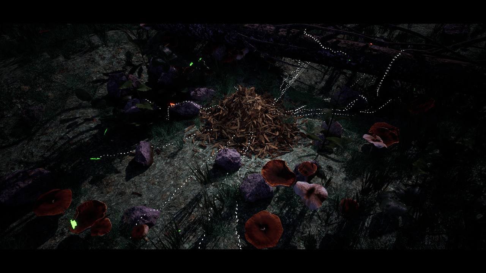
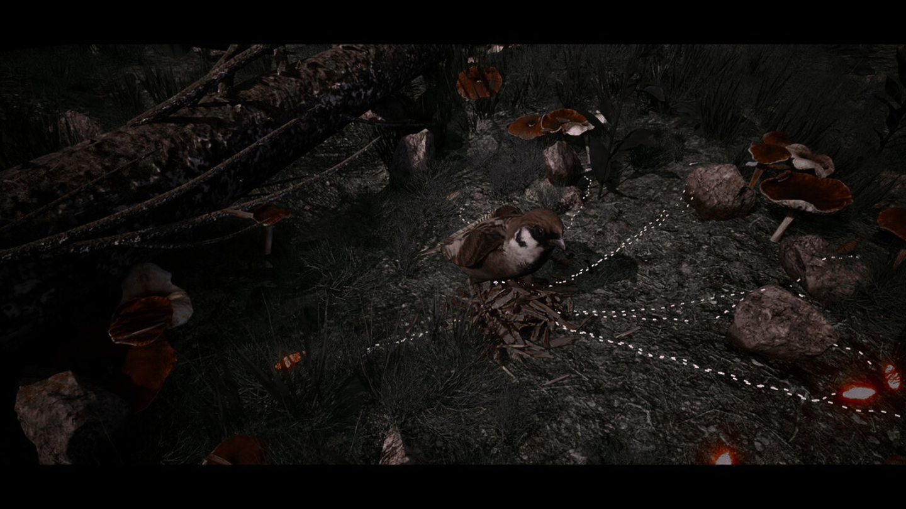

SOILBORNE:
ANT
EMPIRE


Who it’s for:
- 𖥚 Aspiring 3D and UI/UX designers
- 𖥚 Sound designers without prior case studies
- 𖥚 Front-end and back-end developers starting out
- 𖥚 Anyone who wants to be credited and receive official documentation
What’s included:
- Your name in the project credits in your chosen role
- A certificate of participation with your selected category
- The right to showcase the project in your portfolio
- Easy entry — no technical selection required
You choose your area and make a contribution — this is a form of partnership support. All funds go directly into the game’s development.
The certificate confirms your role and participation, with no mention of sponsorship.
You won’t share in project revenue — this is a professional development opportunity, not an investment model.
This is the perfect moment to be part of something unique – before the whole internet starts talking about it.
Support Our Game
Your backing helps us finish development, record narration, expand the engine, and run wide-scale testing.
Pick an amount
© 2025 v.a.c.u.u.m. All rights reserved